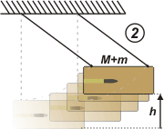

NO ME SALEN
PROBLEMAS RESUELTOS DE FÍSICA DEL CBC
(Leyes de conservación, impulso, cantidad de movimiento, choque)
|
|

|
3.6- Un proyectil de 10 g que se mueve horizontalmente
a 400 m/s se incrusta en una caja de
5 kg que se halla en reposo, suspendida de un hilo
largo de masa despreciable. Determinar con
qué velocidad se moverá la caja con el proyectil
dentro, luego del choque. Hallar también hasta
qué altura máxima se elevará el conjunto.
Re papa. Acá viene la bala, más veloz que un rayo... andá a medirle la velocidad con una cinta y un cronómetro. El que sigue es un método sencillo para medir (indirectamente) la velocidad de la bala, vm. Llamaré vM a la velocidad del bloque antes de chocar; y vc a la velocidad del conjunto después de incrustarse la bala. |
La bala se incrusta en el bloque de madera: se trata de un choque plástico:
m vm + M vM = vc (M + m)
Como el bloque de madera estaba esperando en reposo su velocidad antes de chocar, vM, es nula. Entonces queda:
m vm = vc (M + m)
|
 |
La masa de la bala es despreciable con respecto a la masa del bloque; de modo que M+m es prácticamente igual a M. La cuestión queda así:
m vm = vc M
vc = m vm / M
|
 |
|
Aunque se trata de una velocidad lenta, tampoco es fácil de medir por el método corriente de regla y cronómetro; es muchísimo menor que vm, pero cambia rápidamente. Hay un método más sencillo, que es medir la altura a la que llega el conjunto, y vincular ese estado, 2, con el estado inmediatamente posterior al choque, 1.
Como es un proceso -el balanceo- conservativo:
ΔEM12 = EM2 — EM1 = 0
|
 |
|
|
|
EM2 = EM1
½ M vc² = M g h2
½ vc² = g h2
h2 = vc² / 2 g
h2 = m² vm² / 2 g M²
|
|
|
|
|
|
| |
| |
| DISCUSION: Este dispositivo se utilizó no demasiado antiguamente para medir las altas velocidades de los proyectiles (no era el único método, en el problema adicional 15 tenés otro). El procedimiento era justamente el inverso al que te propone este ejercicio. Se medía la altura a la que llegaba el bloque con el proyectil incrustado y a partir de ese dato se infería la velocidad del proyectil. |
|
 |
| DESAFIO: ¿Cuánto vale la energía de la bala? ¿Cuánto de esa energía se destina a la destrucción del bloque? ¿Qué velocidad tendría el proyectil si el bloque hubiese ascendido 6 cm? |
|
| Algunos derechos reservados.
Se permite su reproducción citando la fuente. Última actualización nov-06. Buenos Aires, Argentina. |
|
|